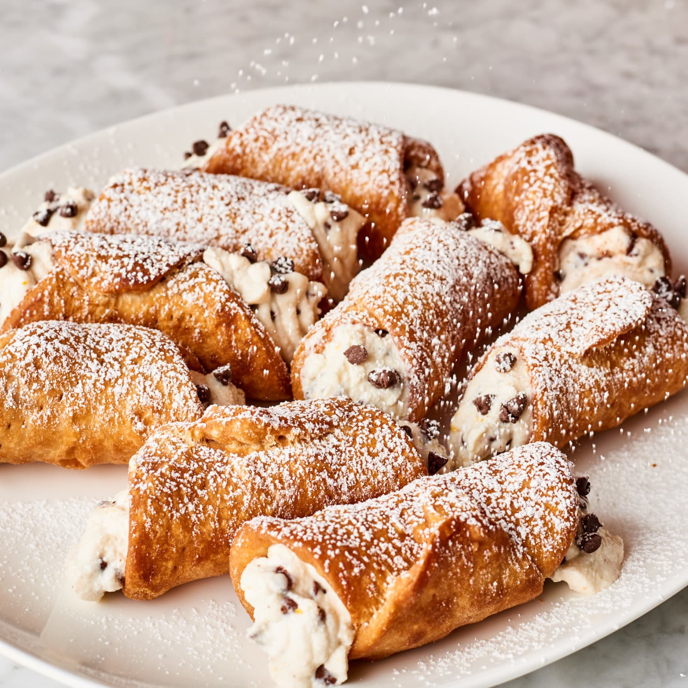

Learn how to make cannoli with our easy-to-follow recipe. A classic Italian pastry with a crisp shell and creamy, sweet ricotta filling, it's a moreish treat

Price : 200/-
Nutrition:
kcal
fat
saturates
carbs
sugar
fibre
protein
salt
229
15g
7g
18g
7g
1g
5g
0.3g
Ingrediants: 150g plain flour,
1 tbsp golden caster sugar,
large pinch bicarbonate of soda,
½ tsp cinnamon,
1 tsp cocoa powder (optional),
30g butter,
1 egg, separated,
50ml dry marsala or white wine,
rapeseed oil or sunflower oil for deep-frying (see tip),
50g dark chocolate, melted,
handful pistachio kernels, finely chopped,
icing sugar, to dust, 250g ricotta, drained and beaten until fluffy,
100g mascarpone,
2 tbsp finely chopped candied peel,
2 tbsp icing sugar Method
Step 1:Tip the flour, sugar, bicarb, cinnamon and cocoa (if using) into a bowl with a pinch of salt. Add the butter and rub it into the dry ingredients until there are no more lumps. Mix the egg yolk and marsala and add this to the bowl, then mix the whole lot together and knead to a smooth dough. Wrap and rest in the fridge. (Can be made ahead and fried the next day.)
Step 2:Fill a deep-fat fryer, wok or deep saucepan a third of the way up with oil. Cut the dough into pieces and, working one piece at a time, roll them out as thinly as you can – use a pasta machine if you have one. Heat the oil and keep an eye on it until it reaches 180C. Lay the dough out on a lightly floured surface and cut out circles about 11cm across. Wrap each one around a cannoli mould, using some of the egg white to stick the top edge down and they're ready for frying.
It's important to take care when cooking with hot oil. Read our guide on how to deep-fry safely to avoid accidents in the kitchen.
Step 3:Deep-fry the cannoli (with their moulds) one at a time, making sure they cook all over. They should take about 45-60 seconds in all and should be visibly golden brown (keep cooking a little longer if they aren't) and the dough will bubble and blister. Carefully take each one out of the oil using the tongs and shake the cannoli off the mould very carefully onto kitchen paper. As you fry each one, make sure the oil stays at 180C at all times and doesn’t get any hotter. These will keep for 2-3 days in an airtight container.
Step 4:When the cannoli are cold, dip the end of each one into chocolate, then dip some of those into the pistachios. Leave to cool and harden. Beat the ricotta and mascarpone together, then stir in the candied peel and sugar. Spoon the mixture into a piping bag with a wide star nozzle and pipe it into the cannoli. Serve soon after filling.